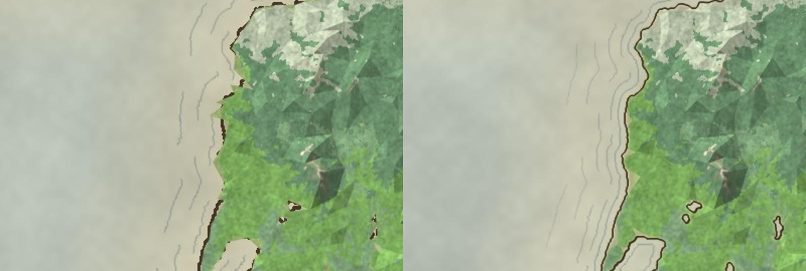
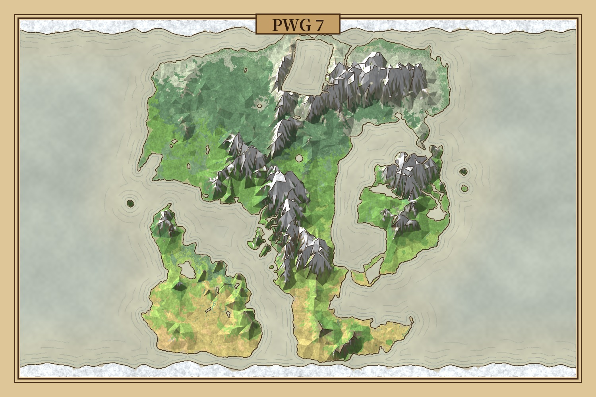
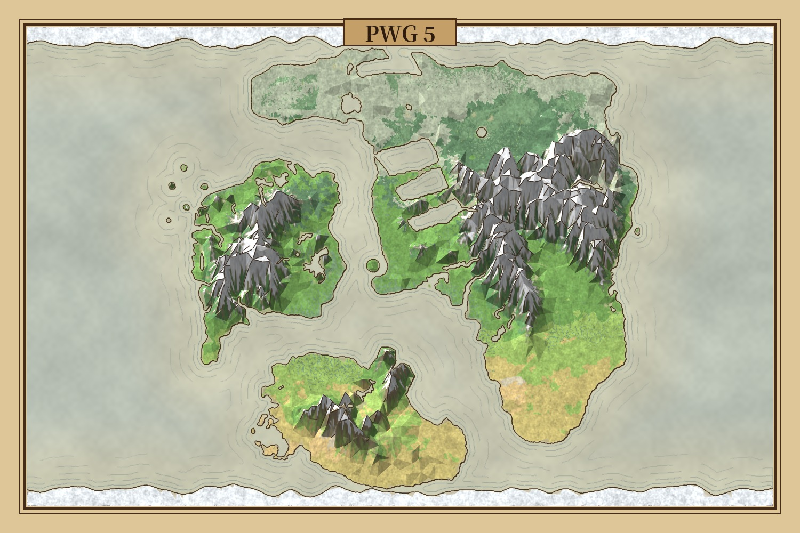
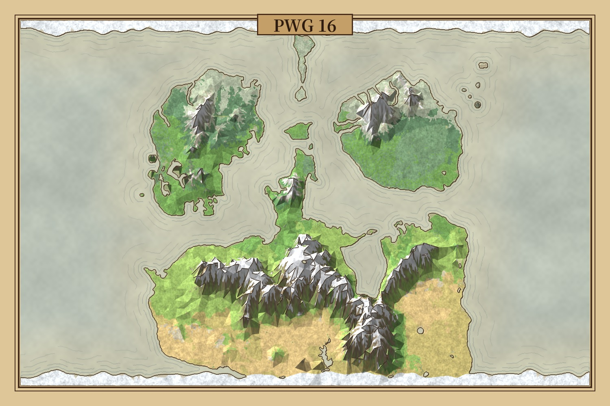
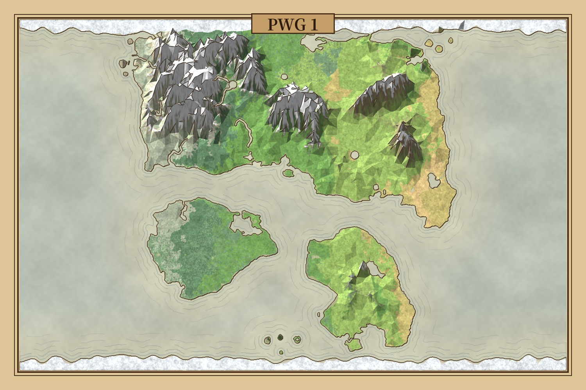

海岸線の作り込み(試作v2・11-20)
概要: 描く順の最初にある海岸線を作り込みました。前の絵の海岸は、①面のぎざぎざがとがって海に出る ②墨の線がちぎれて太さもばらばら ③浅瀬と、岸にそった波線が少ない、という問題がありました。そこで、データの陸の形は保ったまま、整えた海岸線を先に作り、面を海岸でそろえ、墨線・浜・浅瀬・波線を足しました。絵はmapstyle44(粗いローポリ+UV)と同じ設定で、海岸だけ違います。
拡大(左=前、右=今回)

絵番号 E001
調べたこと(出典)
- 海岸線の描き方(Fantastic Maps): 海岸線は「ぎざぎざで不規則」にし、浜のところだけなめらかにする。硬い海岸線は少し太く、波は細く薄く。波は岸に近いほど密に、沖ほど間をあける。ペンを離さず1本の線で描く。
- 海岸の4つの様式(同): 「切れた波」(岸に近いほど細かく岸の形にそい、沖ほど長く間があき大きな形だけにそう)/ 深さの等高線風 / さざなみ / 単純な横線。
- 昔風の海の描き方(同): 海岸を濃く太い線で描き、そのまわりに薄い平行線を重ねる。1本目は岸から一定の距離、あとは間を少しずつ広げる。狭い入り江は線を押し込まず、なめらかにしたうえで、入り江の中にはまとまりのない別の波を置く。海岸のまわりに薄い青の水彩を重ねてもよい。
- ハブの調査(mapcraft1): 海は岸から離れるほど濃く。描く順は海岸線→山→川→森→飾り。浅瀬の明るさは約27%(ユーザー案 11-19)。
何をどう足したか
- 整えた海岸線: 陸の形を少しなめらかにし、細かいゆらぎ(手描きのぎざぎざ)を足した。元の形から3ピクセル以上は動かさない。
- 面のはみ出しを消す: ローポリの面が海岸の外にとがって出る所を消し、面が足りない陸は下の水彩で埋める。海岸は、整えた海岸線にそろう。
- 海岸の墨線: 切れない1本の線。光が左上なので、右下向きの海岸を太く(約2.6〜4.8ピクセル)。
- 浜: 岸の内側に細い砂色の帯(低い所だけ)。
- 浅瀬: 岸ぞいを明るい青緑にして沖の色へなじませる。
- 波線: 岸にそって5本。岸から7・15・26・40・58ピクセルと間を広げ、沖ほど切れ目が増えて薄くする。狭い入り江は先にふさいで、線を入れない。
全体(5世界のうち4つ)

絵番号 E002

絵番号 E003

絵番号 E004

絵番号 E005
目で見た評価(各1枚)
- 海岸が1本のつながった線になり、とがった出っぱりが消えた。島も小さな点や輪としてそろった。
- 岸にそった波線で、陸と海の境がはっきりし、「地図らしく」見える。
- 浅瀬と浜は、控えめで、ほとんど目立たない(もう少し強くしてよいかもしれない)。
- 内陸の淡い四角い面(湖?)に、海岸と同じ墨の輪郭がつく。四角い形そのものは、データ側の癖で未解決。
- 波線は全体に薄く、iPhoneの小さい画面では見えにくいかもしれない。
限界・未確認
- 各1枚・目視のみ。iPhoneでの見え方は未測定。
- 3D表示(world3d.html)にはまだ反映していない。いまは絵(画像)だけ。3Dでは、海岸でテクスチャの透明度を切って面を切り抜く方法が考えられるが、未試作。
- 「深さの等高線風」「さざなみ」など、ほかの様式は作っていない。
- 記事の要旨にもとづき、数字(線の太さ・間隔)は私が決めた初期値。
次の一手: 海岸の見え方(波線・浅瀬・浜の強さ、様式)をご覧になって、強めるか、別の様式にするか判断していただく。
ハブにもどる